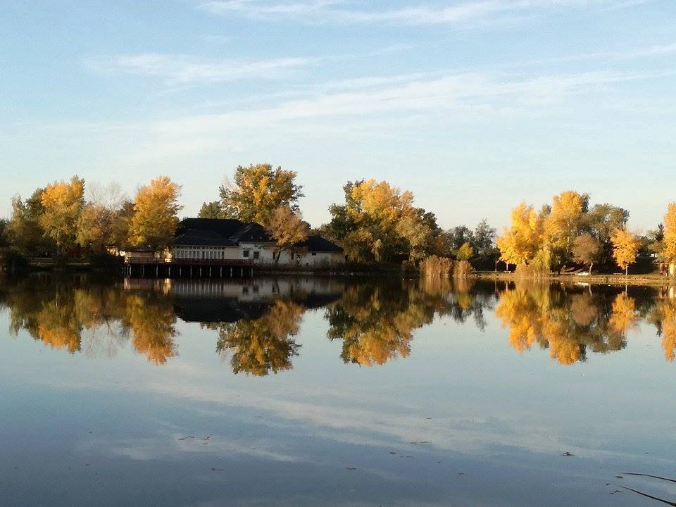
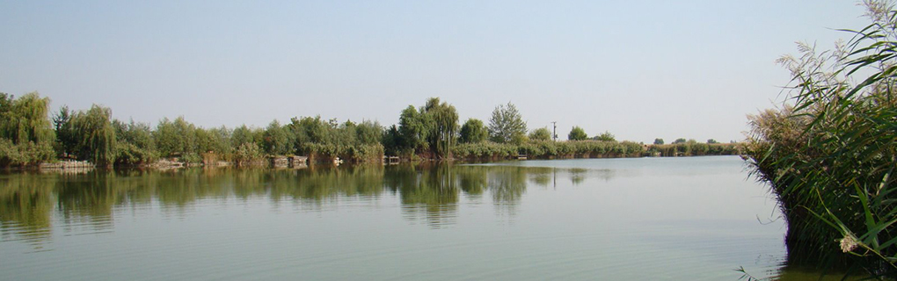
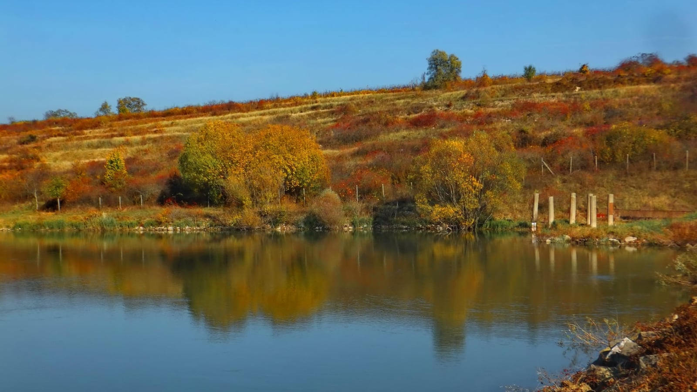
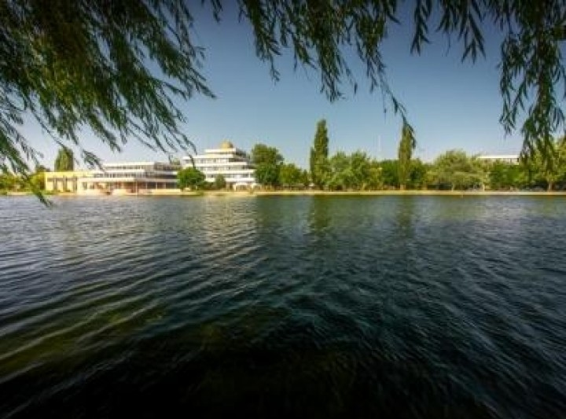
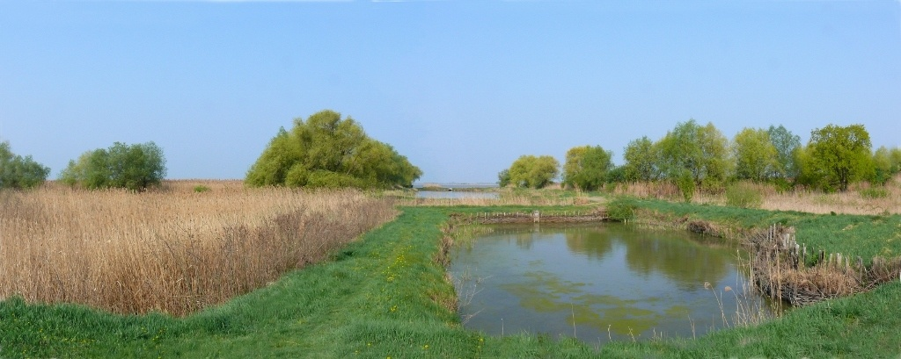

Komárom
2024. március 23. (szombat)
2900 Komárom , WF Szabadidőpark

Komáromi horgász programok. Évadnyitó horgászverseny a WF Szabadidőpark
horgásztaván 2024.március 23-án a WF Szabadidőparkban.
Nevezési díj: 6.500,-Ft.
Röszke
2024. március 23. (szombat)
6758 Röszke , (46.176136 x 20.048933)

A Röszkei Sporthorgász és Természetvédő Egyesület által szervezett horgászversenyek.
Siófok
2024. április 21. (vasárnap) - 2024. április 27. (szombat)
8600 Siófok ,
A világ egyik legnagyobb pontyfogó versenye
az IBCC Nemzetközi Balatoni Pontyfogó Kupa.
A verseny nyílt nemzetközi csapatverseny.

2024-ben a rendezvény tervezett időpontja: április 21-27,
helyszíne Siófok.
Bátonytenyere
2024. április 27. (szombat) - 2024. április 28. (vasárnap)
3070 Bátonyterenye , Maconkai-víztározó (47.99437 x 19.849548)
Megnézem a térképen

2024. évi horgászversenyek eseménynaptára
a maconkai horgászparadicsomban.
Bogács
2024. augusztus 29. (csütörtök)
3412 Bogács , Szoros-völgyi víztározó (47.914585 x 20.518908)
„Halra Fel!” horgászverseny és országos horgásztalálkozó Bogácson,
a Szoros-völgyi víztározónál 2024. augusztus 29-én. A fürdőváros
nemcsak az üdülőket és gyógyulni vágyókat várja,

de a horgászat szerelmesei is kiváló programokat találnak itt.
Ragadja meg horgászbotját és látogasson el Bogácsra, erre a
kiváló nyárzáró horgászati rendezvényre!
Székesfehérvár
2024. április 20. (szombat)

8000 Székesfehérvár , Palotavárosi tavak
2024-ben kilencedszer várja a vendégeket a Palotavárosi
tavaknál a város népszerű gasztronómiai eseménye, a Fehérvári Halünnep.
A főzőversenyt, színpadi és családi programokat kínáló esemény
2024. április 20-án, szombaton kerül megrendezésre.
A nap sztárfellépője az Irigy Hónaljmirigy lesz.
Hortobágyi-halastó
Szakvezetéses terepmadarász gyalogtúra a Hortobágy-halastavi tanösvényen.
A túra során megismerkedhet a terület történetével, sajátosságaival, fontos
és jellegzetes növény-, és állatfajaival. A kilátogatók a szakvezetéses

gyalogtúrán megismerkedhetnek a terület legfontosabb értékeivel,
a halastavak élővilágával.
A túra részét képezi a távcsöves madármegfigyelés is, melynek
során a résztvevők bepillantást nyerhetnek a tavaszi madárvonulás
mozgalmába. A túra hozzávetőlegesen 10 km hosszú.
Időjárásnak megfelelő réteges öltözet, kézitávcső ajánlott.